Premiers designs des Cryptonloids
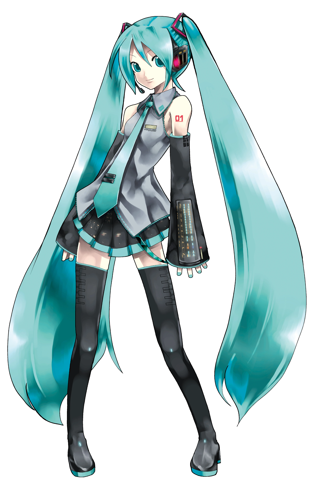
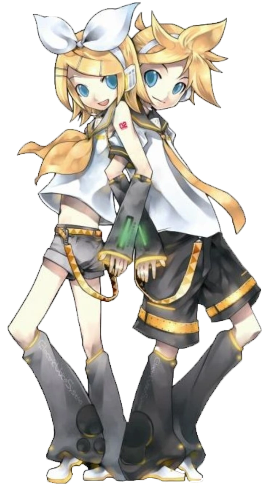
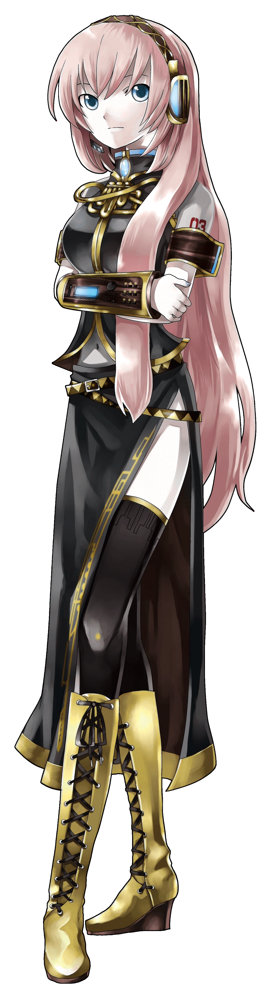
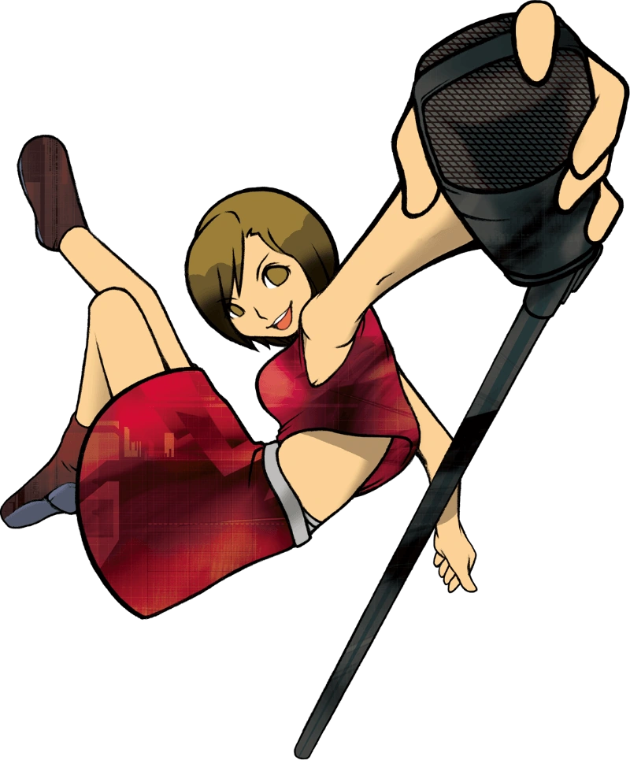

Les VOCALOIDS sont des instruments de musique synthétisant des voix humaines. Les fournisseurs de voix s'enregistrent en disant les lettres japonaises. Ces extraits de voix sont ensuites enregistrés dans une application qui permet de placer les sons à une hauteur et un temps choisis, permettant de créer une mélodie. De manière générale, chaque personnage officiel a son propre fournisseur. Par contre, la communauté des Vocaloids est extrêment grande, ce qui a mené plusieurs personnes à créer leur propres personnages, créant des nouvelles catégories de personnages qui ne sont pas exactement des Vocaloids.
La première catégorie est celle des Fanloids (mot-valise de « fan » et « Vocaloid »), des personnages qui n'ont pas de voix officielle. Le personnage le plus populaire de cette catégorie est Akita Neru La voix dans les chansons qu'elle chante est soit une version plus aigue de Kagamine Rin, soit une version plus grave de Hatsune Miku. Malgré cela, elle est extrêment populaire, si bien qu'elle est reconnue par Crypton, si bien qu'elle apparaît dans plusieurs jeux officiels, comme Project Diva. Bien qu'elle soit si reconnue, Neru n'a à ce jour pas de voix officielle, puisque les coûts pour en créer une sont extrêment hauts.
La deuxième catégorie est celle des Utauloids (mot-valise de « utau », qui veut dire « chanter » en japonais, et « Vocaloid »), des personnages qui sont eux aussi créées par la communauté, mais, contrairement aux Fanloids, ont des voix officielles. Kasane Teto est l'Utauloid la plus connue, elle apparaît elle aussi dans des jeux de Crypton.
La plus grande différence entre les Vocaloids et les Utauloids est le prix. Alors que les Vocaloids coûtent plus de 150$ par personnage, les Utauloids sont gratuits, permettant à tout le monde de pouvoir les utiliser. Par contre, avec sa popularité fulgurante, Kasane Teto a reçu une voix dans le programme SynthesizerV, qui permet d'avoir une voix plus réaliste, mais coûte environ 100$. Cette amélioration de programme n'a tout de même pas enlevé la possibilité d'utiliser Teto gratuitement sur UTAU, le programme des Utauloids. De plus, plusieurs personnes préfèrent le charme robotique de la voix originale de Teto. Le tout revient donc à des préférences personnelles, rien n'oblige à mettre de l'argent dans un programme simplement pour continuer de chanter avec Teto.
Le terme « Vocaloid » est utilisé à la fois pour désigner l'application ou les personnages. Cependant, VOCALOID réfère officiellement à l'application. Celle-ci a été créée par YAMAHA, beaucoup de personnages sont eux-mêmes inspirés de produits de YAMAHA. Par exemple, Miku a été inspirée du synthétiseur turquoise de la compagnie.
L'interface principal de l'application est assez facile à comprendre. L'utilisateur place un son sur un graphique où l'axe des abscisses représente le temps et celui des ordonnées, la hauteur de la note. Cependant, il s'agit seulement de la fondation pour créer une chanson. Afin de rafiner les chansons, les producteurs vont utiliser une technique qui s'appelle le « tuning ».
Le tuning est une technique permettant de rajouter des fluctuations dans la voix des personnages. Elle permet donc de rendre la voix du chanteur plus naturelle, d'ajouter des vibratos ou de rendre les transitions entre les notes plus humaines. Un bon exemple de cela est la transition vers une haute beaucoup plus haute: la voix risque de fluctuer, d'aller plus aigu avant d'atteindre la note ou de s'ajuster durant celle-ci. Certaines chansons vont aussi ajouter des sons de respirations pour faire comme si le chanteur a dû reprendre son souffle entre deux longs extraits. Même si la voix est plus robotique, les chances qu'il n'y a pas eu de tuning sont près de 0. En plus de rendre les voix plus agréables à écouter, le tuning est aussi le style de chaque artiste, si bien qu'en écoutant plusieurs artistes, il devient possible de savoir qui a créé la chanson avec les caractéristiques de la voix. Certains producteurs vont même faire des collaborations, comme Deco*27 et PinocchioP avec la chanson Not a Devil, où les deux utilisent le même personnage, mais chaque partie sonne différemment puisque les deux producteurs ont développé leur propre style de tuning.
| Nom | Date de sortie | Voix originale | Chanson connue | |
|---|---|---|---|---|
| 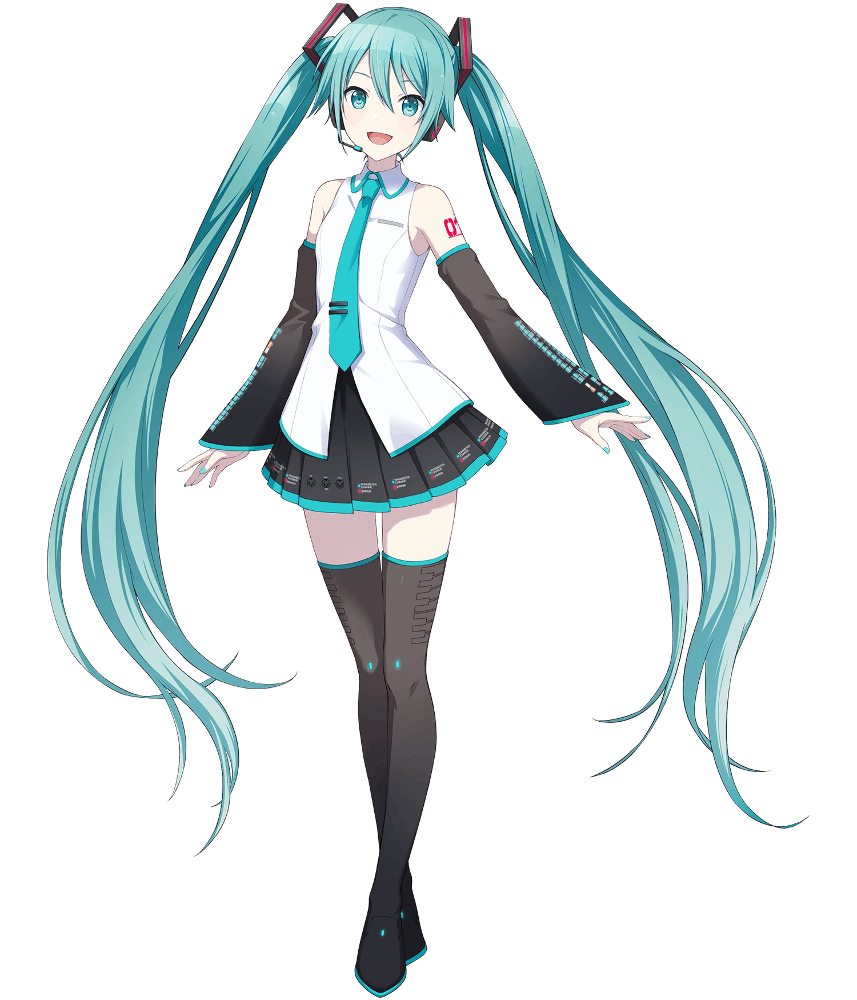 | Hatsune Miku 初音ミク |
31 août 2007 | Saki Fujita | World is Mine ryo (supercell) 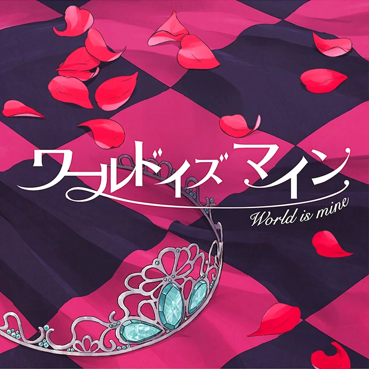 |
| 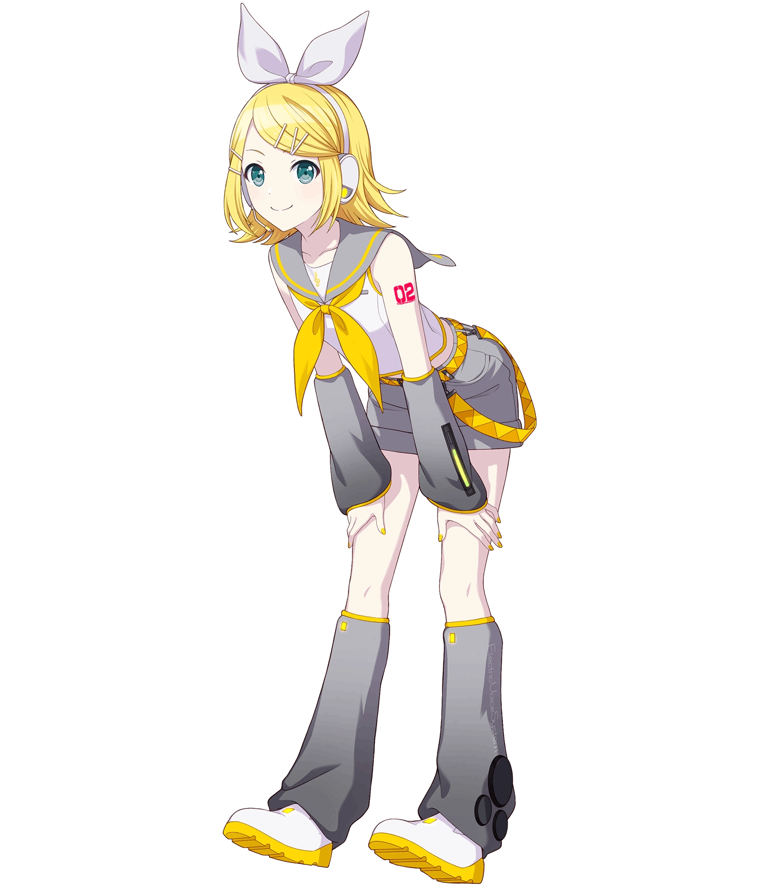 | Kagamine Rin 鏡音リン |
27 décembre 2007 | Asami Shimoda | Roshin Yuukai iroha(sasaki) 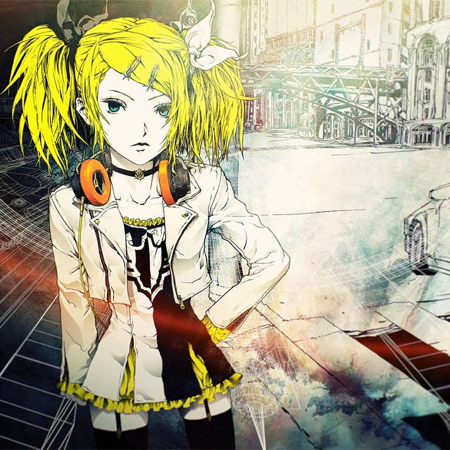 |
| 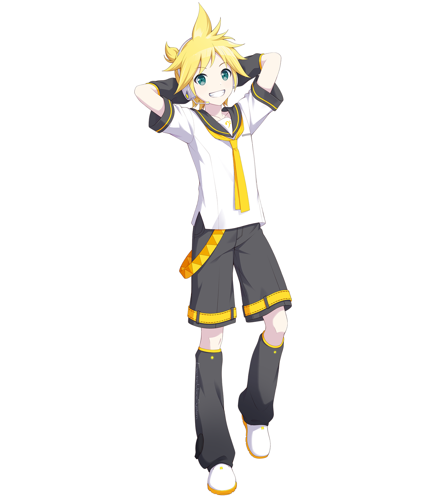 | Kagamine Len 鏡音レン |
27 décembre 2007 | Asami Shimoda | Migikata no Chou noripy 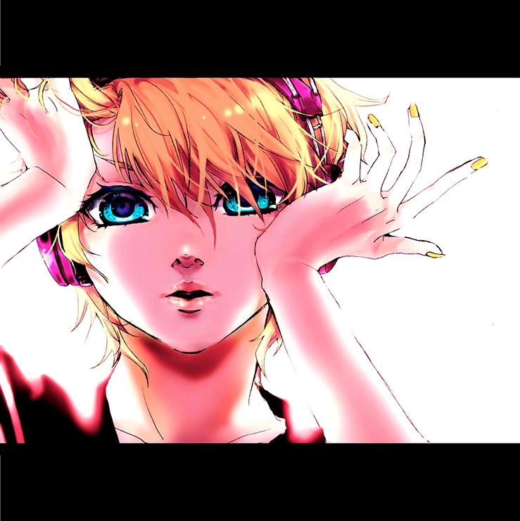 |
| 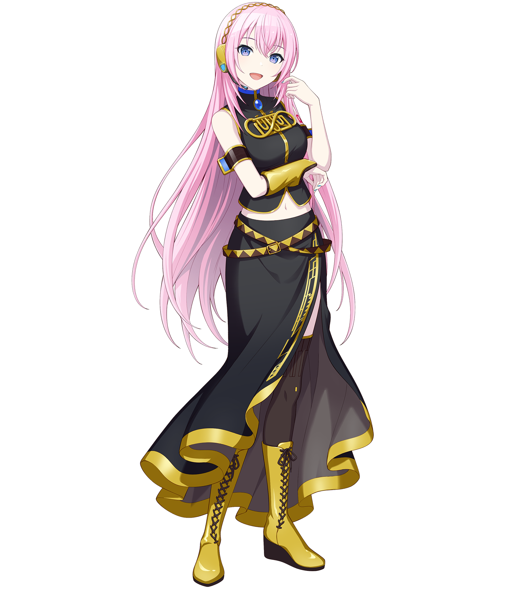 | Megurine Luka 巡音ルカ |
30 janvier 2009 | Yuu Asakawa | Luka Luka★Night Fever samfree 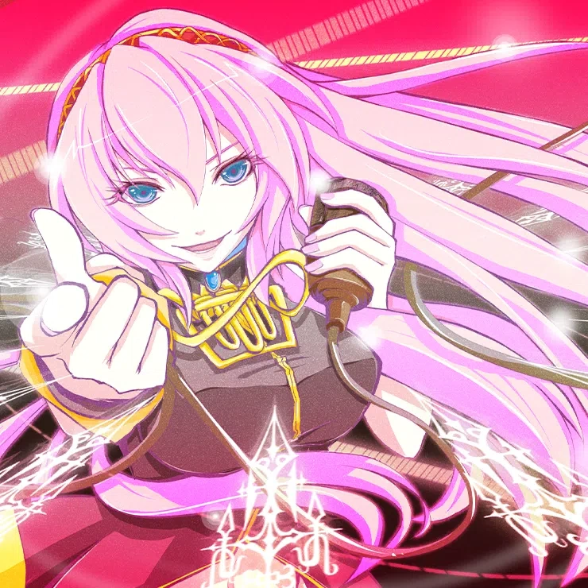 |
| 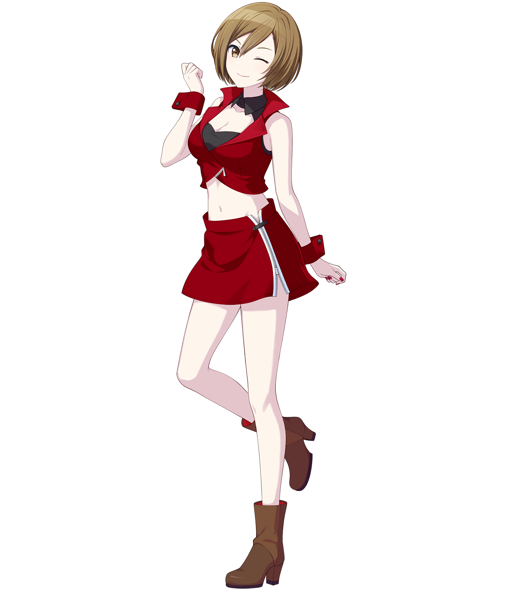 | MEIKO メイコ |
5 novembre 2004 | Meiko Haigou | Change me shu-tP 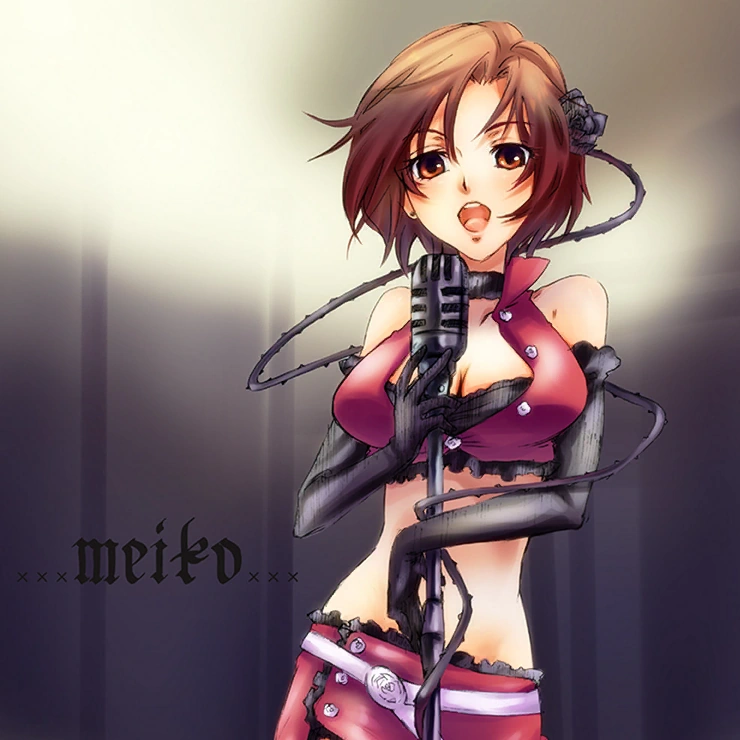 |
| 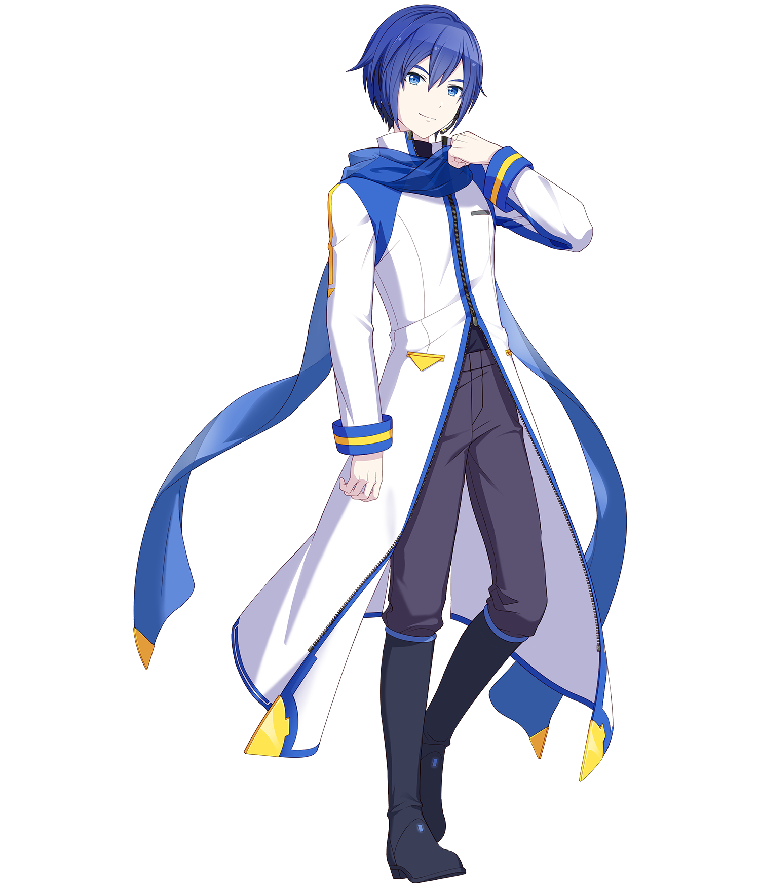 | KAITO カイト |
17 février 2006 | Naoto Fuuga | Sennen no Dokusouka yanagi-P 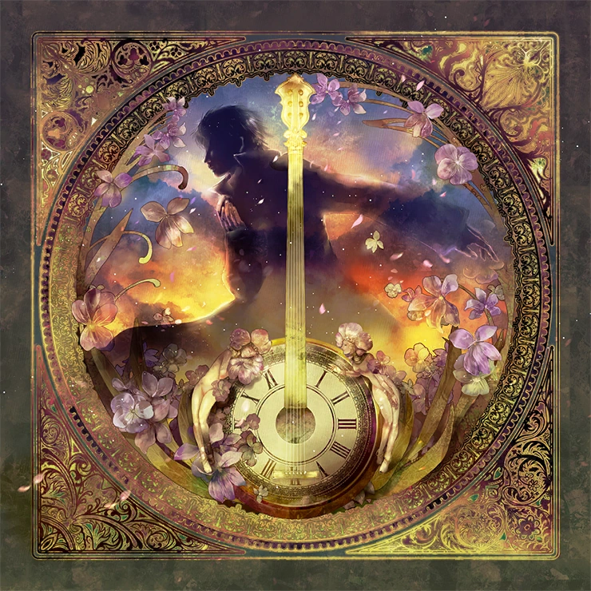 |
Bien qu'elle ait été créée au Japon, Miku est devenue une sensation internationale. À la manière des artistes typiques, Miku et plusieurs autres Vocaloids, plus que les six couverts par la page, apparaissent en concert à travers le monde. Le MIKU EXPO et le Magical Mirai sont les deux événements musicaux les plus populaires, mais bien d'autres ont lieu, notamment pour les 10e anniversaires. De plus, Miku a même performé au Coachella, un événement regroupant des artistes très connus, dont Lana del Ray ou Tyler, the Creator. Afin d'honorer ses admirateurs partout sur la planète, Miku va souvent saluer ou remercier son public dans leur langue natale.
Error ⊂(ﾟДﾟ)
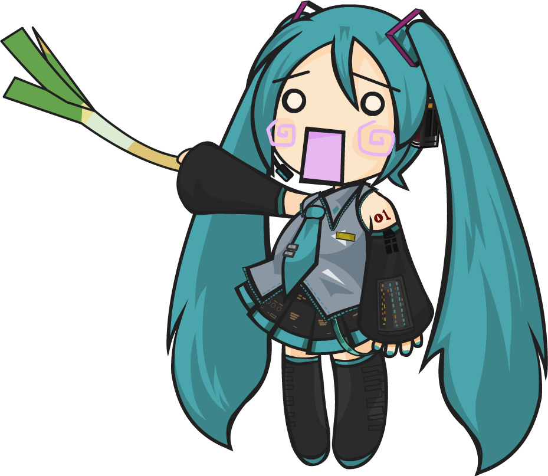